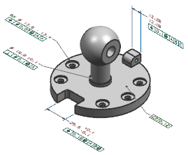

打开 pmi1_notes_1，如果需要，开始 PMI 应用模块。

选择产品制造信息→专用→一般注释 。
在属性组中，在标题输入框中键入一般注释。
在类别列表中选择用户定义。
标识符将变为 User Defined。
在文本输入框中，键入下列文本：
生产这个部件时按照生产时已批准生效的制造标准进行。
译者注：您可能需要点击设置组的样式，然后在文字选项卡的字体列表中选择一个中文字体才能显示中文。